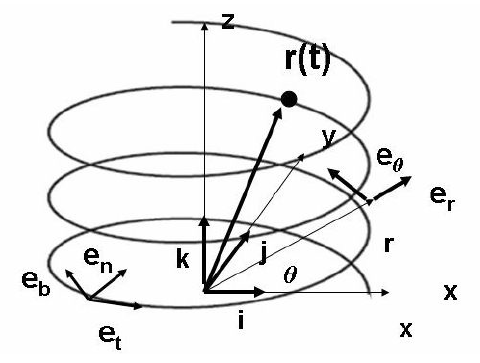

Topic 1: Fundamentals and Particle Kinematics - Problem Sets
An out-of-control rocket traces an upward helical trajectory described in Cartesian coordinates for $t > 0$ by:
where $a$, $v_z$, and $\omega$ are constants.

-
(a)
Express the position, velocity, and acceleration vectors in the Cartesian $x, y, z$ system using unit vectors $\mathbf{i}, \mathbf{j}, \mathbf{k}$.
-
(b)
Express the position, velocity, and acceleration vectors in the cylindrical coordinate system using unit vectors $\mathbf{e}_R, \mathbf{e}_\theta, \mathbf{e}_z$.
-
(c)
Express the velocity and acceleration vectors using $s, \rho$ and the vector basis $\mathbf{e}_t, \mathbf{e}_n, \mathbf{e}_b$.
-
(d)
Compute the modulus of the velocity vector.
-
(e)
Express the evolution of the arc-length coordinate as a function of time.
-
(f)
Write down the trajectory as a function of the arc-length coordinate.
-
(g)
Where is the center of curvature for this curve when the particle is located at $(x, y, z) = (a, 0, 0)$?
Worked Solution [ Click to Expand ]
Constraints, Degrees of Freedom & Coordinates
- System: an out-of-control rocket, modelled as a point particle $P$, ascends along a circular helix around the vertical $z$-axis.
- Hypotheses: $a \gt 0$, $v_z \gt 0$ and $\omega \gt 0$ are constants and $t \gt 0$.
- Constraints and degrees of freedom: the statement gives the three Cartesian coordinates as functions of time, so the particle is on the helix, which satisfies the two holonomic relations $x = a\cos(\omega z/v_z)$ and $y = a\sin(\omega z/v_z)$ (substituting $z = v_zt$ recovers the statement). Two independent relations leave $\text{CDOF} = 3 - 2 = 1$: a single coordinate ($t$, or the arc length $s$) fixes the position on the helix.
- Coordinates: the Cartesian coordinates $(x, y, z)$ of the statement; for the questions we also use the cylindrical coordinates $(R, \theta, z)$ and the arc length $s$.
- Parameters: radius $a$ [m], angular frequency $\omega$ [rad/s], vertical velocity $v_z$ [m/s], time $t$ [s].
Reference Frames & Vector Bases
- Inertial frame: $\mathcal{S}_0 = \{O; \mathbf{i}_0, \mathbf{j}_0, \mathbf{k}_0\}$, fixed to the launch site with $\mathbf{k}_0$ along the vertical $z$-axis.
- Cylindrical basis: $\mathcal{B}_{\text{cyl}} = \{\mathbf{e}_R, \mathbf{e}_\theta, \mathbf{e}_z\}$, a rotation of $\mathcal{B}_0$ by the angle $\theta = \omega t$ about $\mathbf{k}_0$:
The product $RR^T$ has diagonal entries $\cos^2(\omega t) + \sin^2(\omega t) = 1$ (and $1$) and off-diagonal entries $\cos(\omega t)\sin(\omega t) - \sin(\omega t)\cos(\omega t) = 0$.
- The basis vectors, from the columns of the matrix:
- Time derivatives of the unit vectors (direct differentiation of their explicit components, with the chain rule $\frac{d}{dt}\cos(\omega t) = -\omega\sin(\omega t)$ and $\frac{d}{dt}\sin(\omega t) = \omega\cos(\omega t)$; Notes Sec. 2.6.2):
- Intrinsic basis: $\mathcal{B}_F = \{\mathbf{e}_t, \mathbf{e}_n, \mathbf{e}_b\}$ (tangent, principal normal toward the centre of curvature, binormal $\mathbf{e}_b = \mathbf{e}_t\times\mathbf{e}_n$), obtained in 3.1 and related to $\mathcal{B}_{\text{cyl}}$ by a second change-of-basis matrix.
Derivation
3.1 Kinematics
(a) Cartesian position, velocity and acceleration
(b) Cylindrical position, velocity and acceleration
(d) Modulus of the velocity
The speed is constant for all $t$.
(c) Intrinsic basis, and velocity and acceleration in terms of $s$ and $\rho$
- Tangent. $\mathbf{e}_t = \dfrac{\mathbf{v}}{\|\mathbf{v}\|} = \dfrac{a\omega\,\mathbf{e}_\theta + v_z\,\mathbf{e}_z}{V}$.
- Principal normal. Since $\dot{s} = V$ is constant, $\ddot{s} = dV/dt = 0$ and the whole acceleration is normal: $\mathbf{a} = a_n\mathbf{e}_n = -a\omega^2\mathbf{e}_R$. Taking the norm gives $a_n = a\omega^2$, and dividing the vector by it gives
The principal normal points radially inward, toward the axis of the cylinder.
- Radius of curvature. From $a_n = \dot{s}^2/\rho$:
- Binormal. Using $\mathbf{e}_R\times\mathbf{e}_\theta = \mathbf{e}_z$ and its cyclic permutations ($\mathbf{e}_z\times\mathbf{e}_R = \mathbf{e}_\theta$), together with the anticommutativity $\mathbf{e}_\theta\times\mathbf{e}_R = -\mathbf{e}_z$:
- Velocity and acceleration with $s$ and $\rho$:
- Second change-of-basis matrix. Its columns are the components of $\mathbf{e}_t$, $\mathbf{e}_n$, $\mathbf{e}_b$ in $\mathcal{B}_{\text{cyl}}$:
With $V^2 = a^2\omega^2 + v_z^2$, the rows have unit norm ($1$, $(a^2\omega^2 + v_z^2)/V^2 = 1$ and $(v_z^2 + a^2\omega^2)/V^2 = 1$) and are mutually orthogonal (row 1 against rows 2 and 3 gives $0$, rows 2 and 3 give $a\omega v_z/V^2 - v_za\omega/V^2 = 0$), so $RR^T = I$; expanding along the first row, $\det = -(-1)\left(\frac{a^2\omega^2}{V^2} + \frac{v_z^2}{V^2}\right) = 1$. Expanding the determinant along the first row (its only non-zero entry is $-1$ in position $(1,2)$, with cofactor sign $-1$):
The columns have unit norm and are mutually orthogonal, so $R R^T = I$; the composition $[{}_0 R_{\text{tnb}}] = [{}_0 R_{\text{cyl}}][{}_{\text{cyl}} R_{\text{tnb}}]$ is again a proper rotation (determinant $1\cdot 1 = 1$).
3.2 Forces
Not applicable: kinematics-only problem. The trajectory is given, so no force enters the question.
3.3 Equations of Motion
Not applicable: kinematics-only problem. The motion is prescribed by the statement, so there is no equation of motion to solve.
3.4 Integration and Answers
(e) Arc length as a function of time
(f) Trajectory as a function of the arc length
(g) Centre of curvature at $(a, 0, 0)$
- The helix passes through $(a, 0, 0)$ where $z = v_zt = 0$, i.e. at $t = 0$. The statement says $t \gt 0$, so we take the motion law to hold for $t \ge 0$ (the point is the limit $t \to 0^+$; all formulas are continuous there). At that point $\mathbf{r}_P(0) = a\,\mathbf{i}_0$ and $\mathbf{e}_n(0) = -\mathbf{e}_R(0) = -\mathbf{i}_0$:
Interpretation & Checks
- Dimensional check: $[a\omega] = \text{m}\cdot\text{s}^{-1}$ and $[v_z] = \text{m/s}$, so $V$ is in m/s. The offset $\left[\dfrac{v_z^2}{a\omega^2}\right] = \dfrac{(\text{m/s})^2}{\text{m}\cdot\text{s}^{-2}} = \text{m}$.
- Limiting cases: if $v_z \to 0$ (planar circle) $\rho = a$ and $C = (0, 0, 0)$, the centre of the circle. If $\omega \to 0$ (vertical ascent) $\rho \to \infty$: the curvature vanishes and the trajectory is a straight line.
- Check against the official key:
Problems.pdfhas no entry for Problem 1 in its solution keys. The results are verified by independent derivation: sympy reproduces $\|\mathbf{v}\| = V$, $a_n = a\omega^2$, $\rho = a + v_z^2/(a\omega^2)$ (also from $\rho = \|\mathbf{v}\|^3/\|\mathbf{v}\times\mathbf{a}\|$), the binormal, the centre of curvature and $\det[{}_{\text{cyl}}R_{\text{tnb}}] = 1$ with $R R^T = I$.
A planar spiral is given by the equation $r = \alpha e^{\beta\theta}$, where $\alpha$ and $\beta$ are constants, $r$ is the radial coordinate, and $\theta$ is the angular coordinate. If a particle moves along the spiral according to the equation $\theta = \delta t^n$ (where $\delta$ is a constant), determine:
-
(a)
The radial and transverse components of the velocity.
-
(b)
The radial and transverse components of the acceleration.
-
(c)
The tangential and normal components of the velocity.
-
(d)
The tangential and normal components of the acceleration.
-
(e)
The radius of curvature of the spiral.
Worked Solution [ Click to Expand ]
Constraints, Degrees of Freedom & Coordinates
- System: a particle $P$ moves along the planar spiral $r = \alpha e^{\beta\theta}$ with the prescribed angular motion $\theta(t) = \delta t^n$.
- Hypotheses: $\alpha, \beta, \delta, n \gt 0$ are constants and $t \gt 0$. At $t = 0$, $\dot{\theta} \propto t^{n-1}$ diverges for $0 \lt n \lt 1$ and $\ddot{\theta} \propto t^{n-2}$ diverges for $1 \lt n \lt 2$; for $n = 1$ and for $n \ge 2$ every quantity is finite at $t = 0$ (for $n \ge 2$ the speed vanishes there, which is not a singularity, because $\mathbf{e}_t$ and $\rho$ do not depend on the speed). $t \gt 0$ is kept for all $n$ for uniformity. The motion is planar ($z = 0$).
- Constraints and degrees of freedom: the spiral $r = \alpha e^{\beta\theta}$ is a holonomic, scleronomic constraint in the plane. The particle then has $\text{CDOF} = 2 - 1 = 1$, and the motion law $\theta = \delta t^n$ fixes it completely.
- Coordinates: polar coordinates $(r, \theta)$ about the origin $O$ of the spiral; the angle $\theta$ is the free coordinate.
- Parameters and units: $[r] = \text{m}$, so $[\alpha] = \text{m}$; $\beta$ is dimensionless; $[\theta] = \text{rad}$, so $[\delta] = \text{rad}\cdot\text{s}^{-n}$.
Reference Frames & Vector Bases
- Inertial basis: $\mathcal{B}_0 = \{\mathbf{i}_0, \mathbf{j}_0, \mathbf{k}_0\}$.
- Polar basis: $\mathcal{B}_{\text{polar}} = \{\mathbf{e}_r, \mathbf{e}_\theta, \mathbf{k}_0\}$, a rotation of $\mathcal{B}_0$ by $\theta$ about $\mathbf{k}_0$:
The product $RR^T$ has diagonal entries $\cos^2\theta + \sin^2\theta = 1$ (and $1$) and off-diagonal entries $\cos\theta\sin\theta - \sin\theta\cos\theta = 0$.
- Angular velocity of the basis: $\boldsymbol{\omega} = \dot{\theta}\,\mathbf{k}_0$. By Poisson's formula (Notes Sec. 2.6.2, Eqs. 2.25-2.26): $\dot{\mathbf{e}}_r = \dot{\theta}\,\mathbf{e}_\theta$ and $\dot{\mathbf{e}}_\theta = -\dot{\theta}\,\mathbf{e}_r$.
- Intrinsic basis from the polar basis (derived in 3.1(c), where the sign of the normal is justified): $\mathbf{e}_t = (\beta\,\mathbf{e}_r + \mathbf{e}_\theta)/\sqrt{1 + \beta^2}$, $\mathbf{e}_n = (-\mathbf{e}_r + \beta\,\mathbf{e}_\theta)/\sqrt{1 + \beta^2}$ and $\mathbf{e}_b = \mathbf{e}_t\times\mathbf{e}_n = \mathbf{k}_0$. The components of $\mathbf{e}_t$ and $\mathbf{e}_n$ in $\{\mathbf{e}_r, \mathbf{e}_\theta\}$ are the columns of
(rows of norm $(\beta^2 + 1)/(1 + \beta^2) = 1$ and orthogonal, $(\beta - \beta)/(1 + \beta^2) = 0$). It is completed with $\mathbf{e}_b = \mathbf{k}_0$ as third row and column, $(0, 0, 1)$, so the full $3\times 3$ matrix is a rotation about $\mathbf{k}_0$. This is a planar rotation by the constant angle $\arctan(1/\beta)$: the tangent makes a constant angle with the radial direction (equiangular spiral).
Derivation
3.1 Kinematics
(a) Radial and transverse components of the velocity
(b) Radial and transverse components of the acceleration
- Second derivatives (product rule, with $\dot{r} = \beta r\dot{\theta}$):
- Radial component:
(substituting $\dot{\theta}^2 = n^2\delta^2t^{2n-2}$ and $\ddot{\theta} = n(n - 1)\delta t^{n-2}$, then factoring out $n\delta t^{n-2}$, since $t^{2n-2} = t^{n-2}t^n$).
- Transverse component:
(c) Tangential and normal components of the velocity
- The unit tangent follows from $\mathbf{v} = r\dot{\theta}\left(\beta\,\mathbf{e}_r + \mathbf{e}_\theta\right)$: $\mathbf{e}_t = \left(\beta\,\mathbf{e}_r + \mathbf{e}_\theta\right)/\sqrt{1 + \beta^2}$. The normal toward the centre of curvature must satisfy $\mathbf{a}\cdot\mathbf{e}_n \gt 0$. The left normal $\mathbf{k}_0\times\mathbf{e}_t = \left(-\mathbf{e}_r + \beta\,\mathbf{e}_\theta\right)/\sqrt{1 + \beta^2}$ does: its projection of the acceleration (with $a_r$ and $a_\theta$ of part (b)) is $\left(\beta a_\theta - a_r\right)/\sqrt{1 + \beta^2}$, and
so $\mathbf{e}_n = \mathbf{k}_0\times\mathbf{e}_t$ and $\mathbf{e}_b = \mathbf{k}_0$.
(d) Tangential and normal components of the acceleration
- Normal component. The cross product $\mathbf{a}\times\mathbf{v} = \left(a_t\mathbf{e}_t + a_n\mathbf{e}_n\right)\times v\,\mathbf{e}_t = -va_n\,\mathbf{e}_b$ gives $a_n = \dfrac{\|\mathbf{v}\times\mathbf{a}\|}{v} = \dfrac{|v_ra_\theta - v_\theta a_r|}{v}$. The numerator is
Dividing by $v = r\dot{\theta}\sqrt{\beta^2 + 1}$:
Here $\|\mathbf{v}\times\mathbf{a}\| = |v_ra_\theta - v_\theta a_r|$, because $(v_r\mathbf{e}_r + v_\theta\mathbf{e}_\theta)\times(a_r\mathbf{e}_r + a_\theta\mathbf{e}_\theta) = (v_ra_\theta - v_\theta a_r)\,\mathbf{k}_0$ ($\mathbf{e}_r\times\mathbf{e}_r = \mathbf{e}_\theta\times\mathbf{e}_\theta = \mathbf{0}$, $\mathbf{e}_r\times\mathbf{e}_\theta = \mathbf{k}_0$).
3.2 Forces
Not applicable: kinematics-only problem. The path and the motion law are given.
3.3 Equations of Motion
Not applicable: kinematics-only problem. The motion is prescribed by $\theta(t) = \delta t^n$.
3.4 Integration and Answers
(e) Radius of curvature
Interpretation & Checks
- Geometric invariance: on the spiral the angle $\psi$ between the radial line and the tangent satisfies $\tan\psi = r/(dr/d\theta) = 1/\beta$, a constant. The spiral is self-similar: $\lambda\,r(\theta) = r(\theta + \ln\lambda/\beta)$, so scaling it by a factor $\lambda$ gives the same curve rotated by an angle of magnitude $\ln\lambda/\beta$. Hence every length of the curve, $\rho$ included, scales with $r$.
- Dimensional check: $[\rho] = [r]\left[\sqrt{1 + \beta^2}\right] = \text{m}$; $[v_r] = [v_\theta] = [r\dot{\theta}] = \text{m/s}$, and $[a_n] = [r\dot{\theta}^2] = \text{m/s}^2$.
- Limiting case $\beta \to 0$: the spiral degenerates into the circle $r = \alpha$, with $\rho = r$ and $a_r = -r\dot{\theta}^2$, the centripetal acceleration.
- Check against the official key:
Problems.pdfhas no entry for Problem 2 in its solution keys. The results are verified by independent derivation: sympy reproduces $v_r/(r\dot{\theta}) = \beta$, $v_\theta/(r\dot{\theta}) = 1$, the factorised forms of $a_r$, $a_\theta$ and $a_t$, the identity $a_n^2 = r^2\dot{\theta}^4\left(1 + \beta^2\right)$ and $\rho = r\sqrt{1 + \beta^2}$, with zero residual.
A point particle describes the astroid:
with a motion whose tangential acceleration is constant, $k$. If the point is initially at rest at $\phi = 0$, compute the evolution of the position as a function of time while the particle is in one of the smooth segments of the astroid. (Hint: $ds = \sqrt{dx^2 + dy^2}$).
Worked Solution [ Click to Expand ]
Constraints, Degrees of Freedom & Coordinates
- System: a particle $P$ moves on the astroid $x = a\cos^3\phi$, $y = a\sin^3\phi$ with constant tangential acceleration $a_t = k$ (the statement calls it $k$) and starts from rest at $\phi = 0$.
- Hypotheses: $a \gt 0$, $k \gt 0$. The motion stays within one smooth segment of the curve, here the first-quadrant arc $0 \le \phi \le \pi/2$ (the astroid has cusps at $\phi = 0, \pi/2, \pi, 3\pi/2$). Starting at the cusp $\phi = 0$ the particle could enter either neighbouring arc; we choose the one with $\phi$ increasing, so that $s$ increases with $\phi$ and $d\phi \ge 0$.
- Constraints and degrees of freedom: the curve is a holonomic, scleronomic constraint in the plane, so $\text{CDOF} = 2 - 1 = 1$. The coordinate is $\phi$, or the arc length $s$ measured from $\phi = 0$.
- Parameters and units: scale $a$ [m], tangential acceleration $k$ [m/s$^2$], time $t$ [s].
Reference Frames & Vector Bases
- Inertial frame: $\mathcal{S}_0 = \{O; \mathbf{i}_0, \mathbf{j}_0, \mathbf{k}_0\}$ with the curve in the $Oxy$ plane.
- Parametric curve: $x(\phi) = a\cos^3\phi$, $y(\phi) = a\sin^3\phi$. Differentiating with respect to the parameter (chain rule):
Derivation
3.1 Kinematics
For $0 \le \phi \le \pi/2$ both $\sin\phi$ and $\cos\phi$ are non-negative (and $d\phi \ge 0$), so the positive root is
- Tangential acceleration. The tangential component of the acceleration is the second derivative of the arc length: $a_t = \ddot{s} = k$.
3.2 Forces
Not applicable: kinematics-only problem. The tangential acceleration is given.
3.3 Equations of Motion
Not applicable: kinematics-only problem. The law $\ddot{s} = k$ is the statement itself.
3.4 Integration and Answers
Step 1: arc length as a function of time
Step 2: arc length as a function of $\phi$
Step 3: equating both expressions
where the positive root is taken because $0 \le \phi \le \pi/2$. Therefore
Step 4: position as a function of time
These hold for $0 \le t \le t_{\text{cusp}}$, where $t_{\text{cusp}}$ is defined in Phase 4.
Interpretation & Checks
- Dimensional check: $\left[\sqrt{\dfrac{k}{3a}}\,t\right] = \sqrt{\dfrac{\text{m}\,\text{s}^{-2}}{\text{m}}}\ \text{s} = \text{s}^{-1}\cdot\text{s} = 1$, so the argument of $\arcsin$ is dimensionless, as it must be.
- Physical limits: at $t = 0$, $\phi = 0$ and the particle is at the cusp $(a, 0)$. It reaches the next cusp, $\phi = \pi/2$ at $(0, a)$, when $\sin\phi = 1$:
The total length of the arc is $s(\pi/2) = 3a/2$, consistent with $\frac{1}{2}kt_{\text{cusp}}^2 = \frac{1}{2}k\cdot\frac{3a}{k} = \frac{3a}{2}$. The solution stops at the cusp for a physical reason. The tangent is $\mathbf{e}_t = \left(-\cos\phi, \sin\phi\right)$ and $d\mathbf{e}_t/d\phi = \left(\sin\phi, \cos\phi\right)$ has unit norm, so $\rho = \dfrac{ds/d\phi}{\left\|d\mathbf{e}_t/d\phi\right\|} = 3a\sin\phi\cos\phi$, which tends to $0$ at both cusps, with the centre of curvature on the normal $\mathbf{e}_n = \left(\sin\phi, \cos\phi\right)$ (the arc is convex toward the origin). At arrival the speed is $\dot{s}(t_{\text{cusp}}) = kt_{\text{cusp}} = \sqrt{3ak} \ne 0$, so $a_n = \dot{s}^2/\rho \to \infty$: the motion cannot continue with constant $a_t$ through the cusp. At the start, $a_n \approx \dfrac{(kt)^2}{3a\phi} \to 0$ because $\phi \approx \sqrt{k/(3a)}\,t$, so the departure cusp is regular. Explicitly, $a_n \approx \dfrac{k^2t^2}{3a\sqrt{k/(3a)}\,t} = k\sqrt{\dfrac{k}{3a}}\,t \to 0$.
- Check against the official key: the key of
Problems.pdfis $\phi = \arcsin\left(\sqrt{k/(3a)}\,t\right)$ and $s = kt^2/2$ (read on the rendered page), which equals the result above. Sympy also confirms that $s(\phi(t)) - kt^2/2 = 0$ identically.
An aircraft moves at constant altitude $y_0$ with velocity $v_0$ in the $x$ direction. At time $t = 0$ it is located at $x = 0$, and it begins to accelerate in the $x$ direction at a constant rate $a_x$. Describe the position, velocity, and acceleration in polar coordinates $r, \theta$, and answer the following questions:
-
(a)
Show that: $\dot{r} = \frac{v(t) x(t)}{r(t)}$
-
(b)
Show that: $\dot{\theta} = -\frac{v(t) y_0}{r^2(t)}$
-
(c)
Show that: $\ddot{r} = \frac{v^2(t) y_0^2 + a_x x(t) r^2(t)}{r^3(t)}$
-
(d)
Show that: $\ddot{\theta} = y_0\frac{2v^2(t) x(t) - a_x r^2(t)}{r^4(t)}$
From these expressions form the acceleration vector $\mathbf{a} = a_r\mathbf{e}_r + a_\theta\mathbf{e}_\theta$. Repeat the problem using Cartesian coordinates.
Worked Solution [ Click to Expand ]
Constraints, Degrees of Freedom & Coordinates
- System: an aircraft moves at constant altitude $y_0$ with velocity $v_0$ along $x$. At $t = 0$ it is at $x = 0$ and begins to accelerate along $x$ at a constant rate $a_x$. A fixed observer at the origin $O$ describes its position with polar coordinates.
- Hypotheses: $y_0 \gt 0$, $v_0 \ge 0$ and $a_x$ are constants.
- Constraints and degrees of freedom: the altitude is fixed, $y = y_0$ (holonomic, scleronomic, so $\dot{y} = \ddot{y} = 0$). The aircraft has $\text{CDOF} = 2 - 1 = 1$, with the coordinate $x(t)$ given by the statement.
- Coordinates: Cartesian $x(t)$ for the motion, and polar $(r, \theta)$ about $O$ for the description requested, with $\theta$ measured from $+\mathbf{i}$.
Reference Frames & Vector Bases
- Inertial frame: $\mathcal{S}_0 = \{O; \mathbf{i}, \mathbf{j}, \mathbf{k}\}$ and $\mathbf{r} = x\,\mathbf{i} + y_0\,\mathbf{j}$.
- Polar relations: $r = \sqrt{x^2 + y_0^2}$ and $\tan\theta = y_0/x$; equivalently $\cos\theta = x/r$ and $\sin\theta = y_0/r$.
- Polar basis. $\mathcal{B}_1 = \{\mathbf{e}_r, \mathbf{e}_\theta, \mathbf{k}\}$ is the inertial basis rotated by $\theta(t)$ about $\mathbf{k}$:
The product has diagonal entries $(x^2 + y_0^2)/r^2 = 1$ (and $1$) and off-diagonal entries $(xy_0 - y_0x)/r^2 = 0$.
- The inverse relation $\mathbf{i} = \cos\theta\,\mathbf{e}_r - \sin\theta\,\mathbf{e}_\theta$ is the one used in 3.4.
Derivation
3.1 Kinematics
- The polar position follows from the geometric relations of Phase 2: $\mathbf{r} = r\,\mathbf{e}_r$ with $r(t) = \sqrt{\left(v_0t + \tfrac{1}{2}a_xt^2\right)^2 + y_0^2}$ and $\theta(t) = \operatorname{arccot}\left(\dfrac{v_0t + \tfrac{1}{2}a_xt^2}{y_0}\right)$, with the branch $\operatorname{arccot} \in (0, \pi)$ (so $\theta(0) = \pi/2$, and $\theta$ stays in $(0, \pi)$ even if $a_x \lt 0$ makes $x$ negative). The velocity and acceleration come from differentiating these relations.
(a) Proof that $\dot{r} = \dfrac{v(t)\,x(t)}{r(t)}$
(b) Proof that $\dot{\theta} = -\dfrac{v(t)\,y_0}{r(t)^2}$
(c) Proof that $\ddot{r} = \dfrac{v^2(t)\,y_0^2 + a_x\,x(t)\,r^2(t)}{r(t)^3}$
(d) Proof that $\ddot{\theta} = y_0\dfrac{2v^2(t)\,x(t) - a_x\,r^2(t)}{r(t)^4}$
Position, velocity and acceleration in polar coordinates
- Position and velocity: $\mathbf{r} = r\,\mathbf{e}_r$ and, with (a) and (b),
- Acceleration $\mathbf{a} = a_r\mathbf{e}_r + a_\theta\mathbf{e}_\theta$ from the polar formula:
3.2 Forces
Not applicable: kinematics-only problem. The motion law along $x$ is given.
3.3 Equations of Motion
Not applicable: kinematics-only problem. The acceleration $a_x$ is prescribed.
3.4 Integration and Answers
Repeating the problem in Cartesian coordinates
- Converting with $\mathbf{i} = \cos\theta\,\mathbf{e}_r - \sin\theta\,\mathbf{e}_\theta = \frac{x}{r}\,\mathbf{e}_r - \frac{y_0}{r}\,\mathbf{e}_\theta$:
These equal the polar results of 3.1 identically.
Interpretation & Checks
- Dimensional check: $[\dot{r}] = [vx/r] = \text{m/s}$ and $[\dot{\theta}] = [vy_0/r^2] = \text{s}^{-1}$; $[\ddot{r}] = \dfrac{(\text{m/s})^2\text{m}^2}{\text{m}^3} = \text{m/s}^2$ and $[\ddot{\theta}] = \dfrac{\text{m}\cdot(\text{m/s})^2\cdot\text{m}}{\text{m}^4} = \text{s}^{-2}$.
- Limit $x \to \infty$ (aircraft far away): $r \to x$, so $\dot{r} \to v$, $\dot{\theta} \to 0$, $a_r \to a_x$ and $a_\theta \to 0$: the line of sight aligns with the flight direction and the motion is purely radial.
- Aircraft overhead ($x = 0$, $t = 0$): $\dot{r} = 0$, $\dot{\theta} = -v_0/y_0$, $a_r = 0$ and $a_\theta = -a_x$; with $\theta = \pi/2$, $\mathbf{a} = a_x\mathbf{i} = -a_x\mathbf{e}_\theta$.
- Invariance of the modulus: $a_r^2 + a_\theta^2 = a_x^2\,\dfrac{x^2 + y_0^2}{r^2} = a_x^2$, equal to $\|a_x\mathbf{i}\|^2$ because $[{}_0R_1]$ is orthogonal.
- Check against the official key:
Problems.pdfhas no entry for Problem 4 in its solution keys, but the statement gives the four formulas (a) to (d) as targets, and they are proved above. Sympy confirms the four identities and $a_r = a_xx/r$, $a_\theta = -a_xy_0/r$ with zero residual.
An airplane $A$ is flying horizontally with a constant speed $v_A$, and is towing a glider $B$. The glider is gaining altitude. The tow cable has a length $r$, and the angle $\theta$ formed between the tow cable and the horizontal is increasing at a constant rate of $\dot{\theta}$. We want to determine the magnitude of the velocity, $v_B^0$, and the acceleration, $a_B^0$, of the glider as a function of $\theta$ and its derivatives.
Worked Solution [ Click to Expand ]
Constraints, Degrees of Freedom & Coordinates
- System: a tow plane $A$ flies horizontally at constant speed $v_A$ and tows a glider $B$ that gains altitude. The tow cable has length $r$ and forms an angle $\theta$ with the horizontal.
- Hypotheses: $v_A$ and the cable length $r$ are constant; $\mathbf{a}_A = \mathbf{0}$. The statement says that $\dot{\theta}$ is constant; the answer is requested as a function of $\theta$ and its derivatives, so we keep $\theta(t)$ general and particularise at the end ($\ddot{\theta} = 0$).
- Constraints and degrees of freedom: we place the origin at the altitude of $A$, so $y_A = 0$. The taut cable of constant length keeps $B$ at the distance $r$ from $A$: $\left(x_B - x_{A0} - v_At\right)^2 + y_B^2 = r^2$. This is a holonomic constraint that depends explicitly on time (rheonomic) because the position of $A$ is prescribed, and it is bilateral while the cable is taut. $B$ then has $\text{CDOF} = 2 - 1 = 1$: the angle $\theta$.
- Coordinates: $\theta(t)$ for the glider relative to $A$; the position of $A$ along the flight direction is $x_A(t) = x_{A0} + v_At$.
- Parameters and units: $v_A$ [m/s], $r$ [m], $\theta$ [rad], $\dot{\theta}$ [rad/s], $\ddot{\theta}$ [rad/s$^2$].
Reference Frames & Vector Bases
- Inertial frame: $\mathcal{S}_0 = \{O; \mathbf{i}_0, \mathbf{j}_0\}$ with $\mathbf{i}_0$ horizontal in the direction of flight of $A$ and $\mathbf{j}_0$ vertical, upward.
- Relative position of $B$ with respect to $A$: the glider is behind and above the plane, so the vector from $A$ to $B$ points at the angle $\theta$ above the negative horizontal. Its components in $\mathcal{B}_0$ follow from the geometry of the cable:
This is the only reading compatible with the glider gaining altitude as $\theta$ increases ($r\sin\theta$ grows with $\theta$ for $0 \lt \theta \lt \pi/2$).
Derivation
3.1 Kinematics
Position of the glider
Velocity of the glider
Acceleration of the glider
- Magnitude. Expanding both squares,
and adding them, the cross terms $\pm 2r^2\ddot{\theta}\dot{\theta}^2\sin\theta\cos\theta$ cancel:
3.2 Forces
Not applicable: kinematics-only problem. The motion of $A$ and the cable geometry are given.
3.3 Equations of Motion
Not applicable: kinematics-only problem. No dynamic unknown appears.
3.4 Integration and Answers
- Expanded speed. Expanding the square in $v_B^0$ (valid for any $\theta(t)$, using $\sin^2\theta + \cos^2\theta = 1$): $v_B^0 = \sqrt{v_A^2 + 2v_Ar\dot{\theta}\sin\theta + r^2\dot{\theta}^2}$.
- Constant rate of the statement. With $\dot{\theta}$ constant, $\ddot{\theta} = 0$ and $a_B^0 = r\dot{\theta}^2$.
Interpretation & Checks
- Decoupling from the cruise speed: the acceleration does not depend on $v_A$, because $\mathbf{a}_A = \mathbf{0}$ (uniform rectilinear translation). The glider accelerates only through its circular motion relative to $A$.
- Limiting case $\ddot{\theta} = 0$: the acceleration is purely centripetal, $a_B^0 = r\dot{\theta}^2$, directed along the cable toward $A$ (circular motion of $B$ around $A$).
- Limit $\dot{\theta} \equiv 0$ (identically, so $\ddot{\theta} = 0$ too): $\mathbf{v}_B^0 = v_A\,\mathbf{i}_0$ and $\mathbf{a}_B^0 = \mathbf{0}$: the glider moves rigidly with the plane. (If $\dot{\theta}$ only vanishes at one instant, $a_B^0 = r|\ddot{\theta}|$ there, not zero.)
- Dimensional check: $[r\ddot{\theta}] = [r\dot{\theta}^2] = \text{m}\cdot\text{s}^{-2}$ and $[v_A + r\dot{\theta}\sin\theta] = \text{m/s}$, so $a_B^0$ is in m/s$^2$ and $v_B^0$ in m/s.
- Check against the official key: the key of
Problems.pdfis $v_B^0 = \sqrt{(v_A + r\dot{\theta}\sin\theta)^2 + (r\dot{\theta}\cos\theta)^2}$ and $a_B^0 = \sqrt{r^2\ddot{\theta}^2 + r^2\dot{\theta}^4}$ (read on the rendered page), identical to the result above. Sympy confirms both squares for an arbitrary function $\theta(t)$ with zero residual.
A point particle $P$ travels along a curve given by:
with a velocity along $x$ given by $\dot{x} = 1$.
-
(a)
Find the intrinsic, unitary vector basis associated to the curve.
-
(b)
Express $x$ as a function of an arc length parameter, $s$. You can leave your solution as a function of an integral.
-
(c)
Find the tangent and normal acceleration components of $P$ as a function of $x$.
-
(d)
Write the radius of curvature of the trajectory as a function of $x$.
Worked Solution [ Click to Expand ]
Constraints, Degrees of Freedom & Coordinates
- System: a particle $P$ travels along the curve $y = \sin x$ with horizontal velocity $\dot{x} = 1$.
- Hypotheses: the data are in SI units, so $y = \sin x$ means $y = (1\ \text{m})\sin(x/1\ \text{m})$ and $\dot{x} = 1\ \text{m/s}$. We take $x(0) = 0$, so $x(t) = t$ (in these units).
- Constraints and degrees of freedom: the curve $y = \sin x$ is a holonomic, scleronomic constraint in the plane, so $\text{CDOF} = 2 - 1 = 1$. The coordinate is $x$, whose motion law is given.
- Coordinates: $x$ (and the arc length $s$ along the curve).
Reference Frames & Vector Bases
- Inertial frame: $\mathcal{S}_0 = \{O; \mathbf{i}_0, \mathbf{j}_0, \mathbf{k}_0\}$ with the curve in the $Oxy$ plane.
- Parametric curve: $\mathbf{r}(x) = x\,\mathbf{i}_0 + \sin x\,\mathbf{j}_0$, with $\dfrac{d\mathbf{r}}{dx} = \mathbf{i}_0 + \cos x\,\mathbf{j}_0$. The differential arc length is
- Intrinsic basis. $\mathbf{e}_t$ is the unit tangent and $\mathbf{e}_n$ points toward the centre of curvature (Notes Sec. 2.4). Both are obtained in 3.1. In the plane the normal can be written as the left normal $\mathbf{k}_0\times\mathbf{e}_t$ up to a sign, because the curve has inflection points where the centre of curvature switches sides:
- Change of basis. The matrix with the components of $\mathbf{e}_t$, $\mathbf{e}_n$ and $\mathbf{e}_b$ in $\mathcal{B}_0$ is, for $\sin x \ne 0$,
With $L^2 = 1 + \cos^2x$ and $\operatorname{sgn}^2 = 1$, the rows have unit norm ($(1 + \cos^2x)/L^2 = 1$, $(\cos^2x + 1)/L^2 = 1$, $L^2/L^2 = 1$) and are orthogonal (rows 1 and 2: $(\cos x - \operatorname{sgn}^2\cos x)/L^2 = 0$; row 3 has no common nonzero entry with the others), so $RR^T = I$. For $\sin x \gt 0$, $\mathbf{e}_n$ is the right normal $-\mathbf{k}_0\times\mathbf{e}_t$ and $\mathbf{e}_b = -\mathbf{k}_0$; for $\sin x \lt 0$ it is the left normal and $\mathbf{e}_b = \mathbf{k}_0$. In both cases the triad is right-handed.
Derivation
3.1 Kinematics
Velocity and acceleration
(a) Intrinsic unit basis
- Tangent: $\mathbf{e}_t = \dfrac{d\mathbf{r}/dx}{\|d\mathbf{r}/dx\|} = \dfrac{\mathbf{i}_0 + \cos x\,\mathbf{j}_0}{L}$.
- Pedagogical Justification (normal): by the definition of the course, $d\mathbf{e}_t/ds = \mathbf{e}_n/\rho$, so $\mathbf{e}_n$ is the direction of $d\mathbf{e}_t/ds$. We differentiate with respect to $x$ (product rule, with $\frac{d}{dx}L^{-1} = -\frac{1}{2}L^{-3}\left(-2\cos x\sin x\right) = \sin x\cos x\,L^{-3}$) and use $ds = L\,dx$:
- The norm of this vector is the curvature, and its direction is $\mathbf{e}_n$. The vector $-\cos x\,\mathbf{i}_0 + \mathbf{j}_0$ has norm $L$, so
- For $0 \lt x \lt \pi$ ($\sin x \gt 0$) the arch is concave down and $\mathbf{e}_n$ points downward; for $\pi \lt x \lt 2\pi$ it points upward. At the inflection points $x = k\pi$ the curvature vanishes and $\mathbf{e}_n$ is not defined ($\rho \to \infty$).
- Binormal: $\mathbf{e}_b = \mathbf{e}_t\times\mathbf{e}_n = -\operatorname{sgn}(\sin x)\,\mathbf{k}_0$, constant in each arch.
(c) Tangent and normal acceleration components
- Check: $a_t^2 + a_n^2 = \dfrac{\sin^2x\left(\cos^2x + 1\right)}{1 + \cos^2x} = \sin^2x = \|\mathbf{a}\|^2$.
3.2 Forces
Not applicable: kinematics-only problem. The curve and the motion law $\dot{x} = 1$ are given.
3.3 Equations of Motion
Not applicable: kinematics-only problem. The motion is prescribed by the statement.
3.4 Integration and Answers
(b) Arc-length parameter $s(x)$
The integral cannot be written with elementary functions (extension: it is an incomplete elliptic integral of the second kind); the statement allows leaving it as an integral. Since the integrand satisfies $\sqrt{1 + \cos^2u} \ge 1 \gt 0$, $s(x)$ is strictly increasing, so it can be inverted to give $x(s)$.
(d) Radius of curvature
As a check (extension), this is the standard curvature formula of a plane graph, $\rho = \dfrac{\left(1 + y'^2\right)^{3/2}}{|y''|}$, for $y' = \cos x$ and $y'' = -\sin x$.
Interpretation & Checks
- Dimensional check: $[v] = \text{m/s}$, $[a_t] = [a_n] = \text{m/s}^2$, $[\rho] = [v^2/a_n] = \text{m}$ and $[s] = \left[\int\sqrt{1 + \cos^2u}\,du\right] = \text{m}$ (using the length scale $1$ m inside the sine).
- Special points: at the inflection points $x = k\pi$, $a_n = 0$ and $\rho \to \infty$ (locally straight). At the crest $x = \pi/2$: $v = 1\ \text{m/s}$, $a_t = 0$, $a_n = 1\ \text{m/s}^2$ and $\rho = 1$ m, equal to $1/|y''| = 1$ m; there $\mathbf{e}_n = -\mathbf{j}_0$, toward the centre of curvature below the crest. At $x = \pi/4$: $\rho = (3/2)^{3/2}/(\sqrt{2}/2) = 3\sqrt{3}/2 = 2.598$ m.
- Arc length: $s(\pi) = \int_0^\pi\sqrt{1 + \cos^2u}\,du = 3.8202$ m, greater than the horizontal distance $\pi$ m, as it must be.
- Check against the official key:
Problems.pdfhas no entry for Problem 6 in its solution keys, so the results are verified by independent derivation: sympy reproduces $a_t$, $a_n$, $a_t^2 + a_n^2 = \sin^2x$, the curvature $\|d\mathbf{e}_t/ds\| = |\sin x|/L^3$ and $\rho(\pi/2) = 1$, $\rho(\pi/4) = 3\sqrt{3}/2$; numerical quadrature gives $s(\pi) = 3.82020$ m.